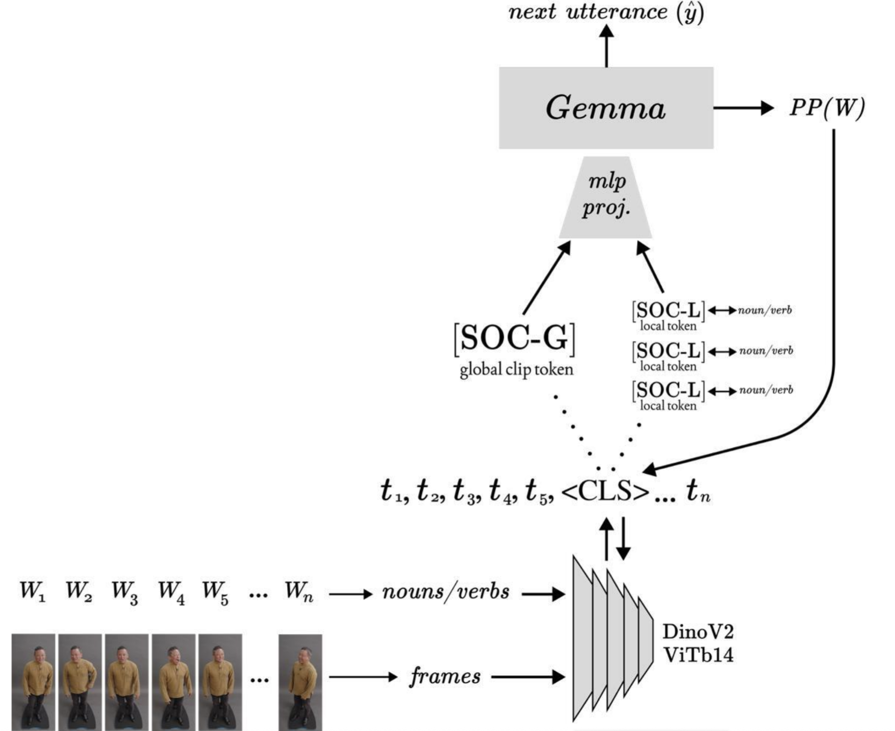
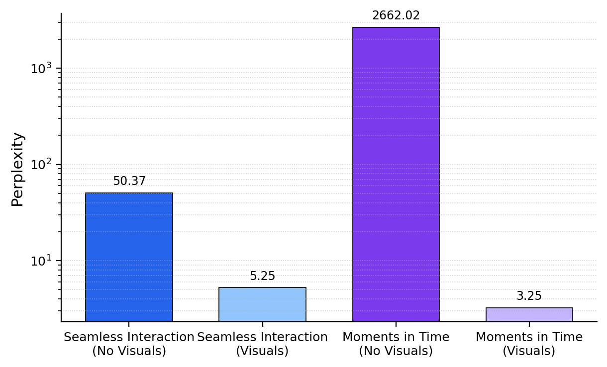
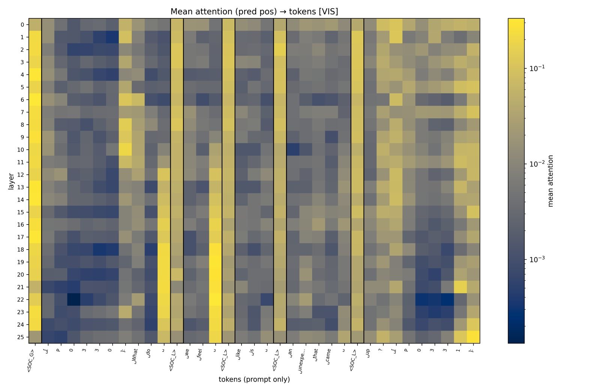
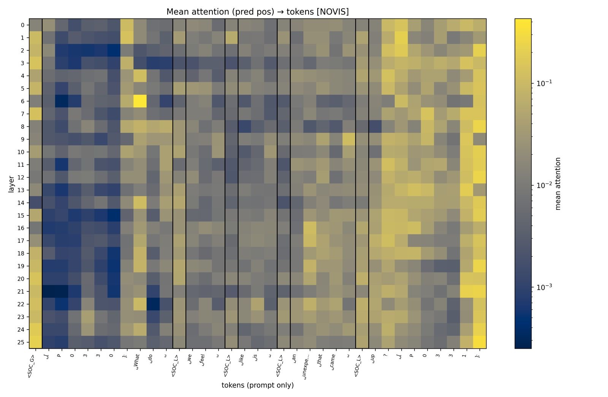

Look, Then Speak: Social Tokens for Grounding LLMs in Visual Interactions

[SOC-L] and global [SOC-G] social tokens.00Overview
LLMs struggle with social interactions because they can't see the cues people use. Social tokens are a lightweight bridge: socially tuned visual embeddings inserted into a frozen LLM, which cut perplexity on social dialogue and receive high attention at socially salient moments.
We first fine-tune a visual encoder on videos of social interactions so that its embeddings capture socially relevant cues. A small MLP then projects these embeddings into the LLM's embedding space, where they are inserted into the input sequence as local and global summaries of the scene. This representational alignment lets the LLM condition generation on social context without updating its parameters.
01See the tokens go in
Given a time-aligned transcript, we POS-tag the text and keep nouns and verbs. For each, we grab the nearest video frame, encode it, and insert a local social token right after the word. A global token (the average of the locals) is prepended. Step through it:
02Method
Let \(L\) be a large language model and \(V\) a visual encoder (e.g., DINOv2 or CLIP). From each video we extract frames \(\mathcal{F} = \{F_1, \ldots, F_m\}\) and a time-aligned transcript \(\mathcal{W} = \{W_1, \ldots, W_n\}\), tokenized by \(L\) into \(\{t_1, \ldots, t_k\}\). Our goal is to build socially aligned visual embeddings, project them with an MLP, and splice them into \(L\)'s token sequence. The design extends naturally to other modalities such as audio.
We fine-tune \(V\) on frames from our dataset with DINOv2's teacher–student self-distillation objective, encouraging it to encode fine-grained social cues.
For each frame \(F_j\), the fine-tuned [CLS] embedding \(v_j\) is its frame-level social representation.
Nouns and verbs carry rich information for social scene understanding, so for each such word at time \(\tau\) we take the nearest frame's embedding \(v_j\) and project it with an MLP \(g(\cdot)\):
\[ \texttt{[SOC-L]}_p = g(v_j), \qquad \texttt{[SOC-G]} = \frac{1}{|\mathcal{P}|}\sum_{p\in\mathcal{P}} \texttt{[SOC-L]}_p \]
The input becomes \( \{ \texttt{[SOC-G]}, t_1, \ldots, t_p, \texttt{[SOC-L]}_p, \ldots, t_k \} \).
\(L\) stays frozen; only \(V\) and the projector \(g\) are optimized with next-token cross-entropy on the text tokens (losses on inserted
[SOC-*] positions are masked). Gradients flow through the social tokens into \(g\) and \(V\), aligning the visual embeddings with \(L\)'s token space.
At test time we repeat extraction, projection, and insertion, then decode with \(L\).
03Results



Future work will include deeper ablations and extension to other modalities, such as audio.
04Citation
@inproceedings{garcia2025socialtokens,
title = {Look, Then Speak: Social Tokens for Grounding {LLM}s
in Visual Interactions},
author = {Garcia, Kathy and Subramaniam, Vighnesh and Katz, Boris
and Cheung, Brian},
booktitle = {NeurIPS 2025 Workshop on Unifying Representations
in Neural Models (UniReps)},
year = {2025},
url = {https://openreview.net/forum?id=tdz8HrfthW}
}